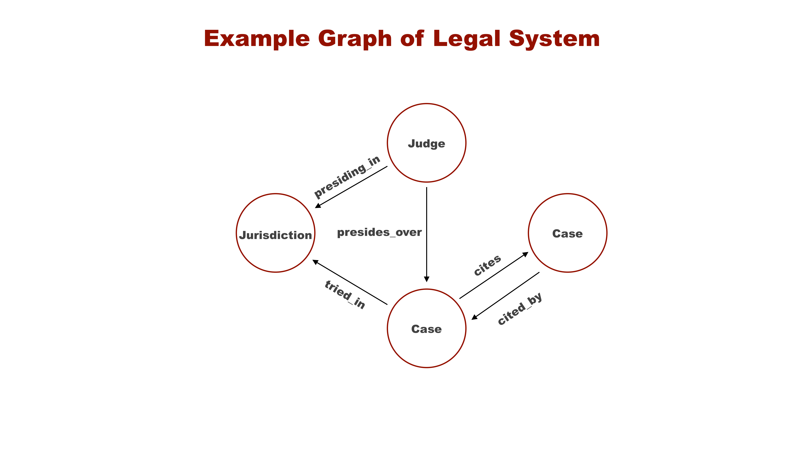

Tutorial graph
AIGraph4pg Tutorial : Graphs, Apache AGE, and openCypher
Graph Terminology
There are several types of graph databases. One of the most common is called Labeled Property Graph or LPG.With LPG graphs, you compose the graph of nodes and edges.Nodes represent the entities in the graph, and the Edges represent the relationships between the nodes or entities. Nodes are alternatively called Vertices. Nodes and Edges can have an arbitrary set of properties which are key-value data pairs.These relationships or edges are "first class citizens" within graph databases, and the relationships are often more important than the nodes themselves. While relational databases offer foreign key constraints, the edges in a graph database are more nuanced and expressive.
Definitions:
- Graph : A collection of nodes and edges
- Node : An entity or vertex in a graph
- Edge : A named connection between two nodes
- Property : Key-value pair associated with a node or edge
- Label : A tag attached to a node or edge, such as "Case" in the following diagram

In the above visualization, the Nodes are represented as named circles while the Edges are represented as named lines.The edges are directed and don't imply or require a reverse relationship. For example, in this model, there is a Case -> tried_in -> Jurisdiction relationship but no corresponding relationship from Jurisdiction to Case.With LGP graphs there is no explicit schema that you have to define. The schema is implicitly created as you add your Nodes and Edges.Note that the graph implemented in this reference application only contains Case Nodes and cites and cited_by Edges. Note Judges, Jurisdictions, and other edge types.
openCypher
openCypher is the query language used by Apache AGE. Per the opencypher.org website:
openCypher is an open source specification of Cypher® - the most widely adopted query language for property graph databases. Cypher was developed by Neo4j®. The openCypher syntax is well documented here in a 200+ page PDF document. It is recommended that you download this PDF and keep it as a handy reference.The following is an example openCypher to find a specific Case node:
In this example, "Case" is the type of Node, and we're searching for the Case with the "id" property equal to 594079. The "c:" part indicates that we're assigning the Case node to the variable "c", then the query RETURNs the "c" variable.Now, when we execute this same query in Apache AGE, we wrapper the openCypher query with a SQL query that looks like the following: select * from ag_catalog.cypher('legal_cases',
$$ MATCH (c:Case {id:594079}) RETURN c $$)
as (c agtype);
select * from ag_catalog.cypher('legal_cases',
$$ MATCH (c:Case {id:594079}) RETURN c $$)
as (c agtype);
Creating and Loading an AGE Graph
Please revisit the docs\readme.md page of the GitHub repository where this process is documented.This section further explains the process.There are multiple ways to load an Apache AGE graph in Azure PostgreSQL. One way by using the psql command line utility to redirect in a set of SQL statements that load the Nodes and Edges; this is the approach used in the docs\readme.md page.The Microsoft Azure PostgreSQL team is currently working on a high-speed data loader utility for Apache AGE graphs. This will be used and documented in this reference application once it becomes available.Currently, this reference application loads the graph with this command that invokes psql:
The data in file age_load_statments.sql contains three lines that look like the following. The first line creates a Case Node, the next line creates a "cites" edge, and the third libe creates an "cited_by" edge. These three lines have been reformatted for readability here. SELECT * FROM cypher('legal_cases',
$$ CREATE (:Case { id: 594079, url: 'https://static.case.law/wash/79/cases/0643-01.json', name: 'Martindale Clothing Co. v. Spokane & Eastern Trust Co.', court_id: 9029, court: 'Washington Supreme Court', decision_year: 1914, citation_count: 5 }) $$)
as (v agtype);
SELECT * FROM cypher('legal_cases',
$$ MATCH (a:Case), (b:Case) WHERE a.id = 1017660 AND b.id = 594079
CREATE (a)-[e:cites {case_id: '1017660', cited_case_id: '594079', case_name: 'United Mutual Savings Bank v. Riebli', cited_case_name: 'Martindale Clothing Co. v. Spokane & Eastern Trust Co.', cited_case_year: 1914 }]->(b) RETURN e $$)
as (e agtype);
SELECT * FROM cypher('legal_cases',
$$ MATCH (a:Case), (b:Case) WHERE a.id = 594079 AND b.id = 1017660
CREATE (a)-[e:cited_by {case_id: '594079', cited_case_id: '1017660', case_name: 'Martindale Clothing Co. v. Spokane & Eastern Trust Co.', cited_case_name: 'United Mutual Savings Bank v. Riebli', cited_case_year: 1960 }]->(b) RETURN e $$)
as (e agtype);
The Underlying Apache AGE Data Structures
You can use the PostgreSQL pg_dump utility, with the --schema-only option to dump the schema of your database to gain insight into how the AGE graph is stored in the database. The output will be similar to the following:
CREATE TABLE legal_cases._ag_label_vertex (
id ag_catalog.graphid NOT NULL,
properties ag_catalog.agtype DEFAULT ag_catalog.agtype_build_map() NOT NULL
);
CREATE TABLE legal_cases._ag_label_edge (
id ag_catalog.graphid NOT NULL,
start_id ag_catalog.graphid NOT NULL,
end_id ag_catalog.graphid NOT NULL,
properties ag_catalog.agtype DEFAULT ag_catalog.agtype_build_map() NOT NULL
);
CREATE TABLE legal_cases."Case" ()
INHERITS (legal_cases._ag_label_vertex);
CREATE TABLE legal_cases.cited_by ()
INHERITS (legal_cases._ag_label_edge);
CREATE TABLE legal_cases.cites ()
INHERITS (legal_cases._ag_label_edge);
Interacting with your AGE graph in Azure PostgreSQL
To execute CRUD operations vs AGE you simply use the tools and software libraries that you already use with PostgreSQL.For example, the psql command line utility, the pgAdmin GUI, or a software library like psycopg2 for Python.See the post_query method in webapp.py in the repo for an example of how to use psycopg_pool to interact with AGE in an asynchronous manner.